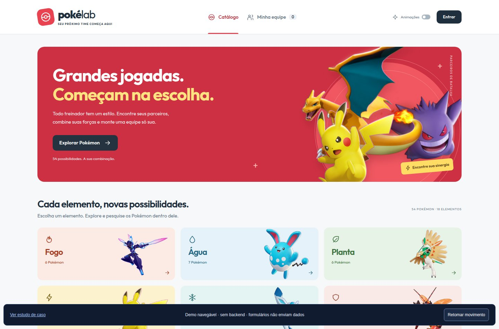
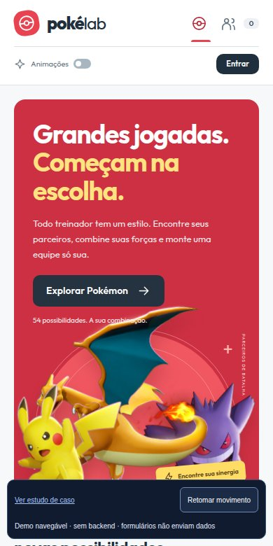

AranhaversoInterface web


Concluído
Aranhaverso
Experiência web · Projeto pessoal
Três Homens-Aranha. Uma experiência cinematográfica.
Explorar estudo de caso Abrir demo navegávelEntre na interface. Explore as decisões.
Conheça o código por trás de cada experiência.
8 projetos para explorar
Experiência web · Projeto pessoal
Três Homens-Aranha. Uma experiência cinematográfica.
Explorar estudo de caso Abrir demo navegável

Catálogo interativo · Sistema web
Explore elementos. Monte sua equipe.
Explorar estudo de caso Abrir demo navegável

Portal de notícias · TCC
Futebol em perspectiva. Do conteúdo ao sistema.
Explorar estudo de caso Abrir demo navegávelMais clareza para organizar a rotina.
Uma exploração visual das quatro casas de Hogwarts.
Apresentação, serviços e portfólio em PHP.
Uma estrutura para cadastro, acesso e perfil.
Um universo temático, uma estrutura de aplicação.
Experimente outra tecnologia ou limpe os filtros.
Repositórios públicos do GitHub, incluindo projetos, ferramentas e o código deste portfólio.
Inventário consultado em 9 de novembro de 2026. Repositórios privados permanecem protegidos.
Disponível para novos projetos